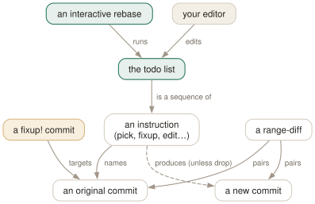

Day 10
Interactive rebase
Editing the todo list: squash, reword, reorder and split, then prove nothing else changed.
By the end of today you can
- read and edit a rebase todo list, knowing what each of
pick,reword,edit,squash,fixup,dropandexecwill do - mark corrections as you work with
commit --fixupand fold them in later with one autosquash rebase - check a rewrite with
git range-diffbefore you push it
The todo list is a program you are allowed to edit
Yesterday's rebase replayed your commits in order, unchanged. git rebase -i shows you the list of what it is about to do before it does it, in your editor, as plain text. Change a word and a commit is reworded; move a line and commits are reordered; change pick to fixup and two commits become one. You are writing a small script that builds a new history.
$ git rebase -i main
pick cc91ff3 # Add parser
pick 7a9b2f2 # Add renderer
pick 811582b # wip
# Rebase 092a8dc..811582b onto 092a8dc (3 commands)
#
# Commands:
# p, pick <commit> = use commit
# r, reword <commit> = use commit, but edit the commit message
# e, edit <commit> = use commit, but stop for amending
# s, squash <commit> = use commit, but meld into previous commit
# f, fixup [-C | -c] <commit> = like "squash" but keep only the previous
# commit's log message, unless -C is used, ...
# x, exec <command> = run command (the rest of the line) using shell
# b, break = stop here (continue rebase later with 'git rebase --continue')
# d, drop <commit> = remove commit
# ...
# If you remove a line here THAT COMMIT WILL BE LOST.
The list is oldest first — the reverse of git log — because it is executed top to bottom. Saving an unchanged list performs an ordinary rebase; deleting every line aborts. The trailing label, reset, merge and update-ref commands in the help exist for rebasing merges and stacks; you meet update-ref below and can ignore the others.

--fixup, autosquash, update-ref — is a way of writing that program for you, and range-diff is how you check what it did.The instructions you will actually use
pick- Replay the commit unchanged.
reword- Replay it, then open the editor on its message. The code is not touched.
edit- Replay it and stop, so you can
commit --amendit or split it withreset HEAD~and several commits; then--continue. squash- Meld into the previous commit and edit the combined message.
fixup- Meld into the previous commit and keep the previous commit's message.
fixup -Ckeeps this commit's message instead. drop- Leave the commit out. Deleting the line does the same.
exec- Run a shell command at this point; a non-zero exit stops the rebase.
break- Stop here, as if an
edithad just finished.
Turning the third line's pick into fixup folds the wip commit into “Add renderer”:
$ git log --oneline main..
f3a0f76 Add renderer
cc91ff3 Add parser
Fixup commits: decide where it goes now, squash it later
Most tidying is the same move: a small correction belongs in an earlier commit. git commit --fixup=<commit> records it with a subject that says so, and any revision expression from Day 7 will do as the target:
$ git commit -a --fixup=':/Add parser'
$ git log --oneline main..
d352992 fixup! Add parser
f3a0f76 Add renderer
cc91ff3 Add parser
$ git rebase -i --autosquash main
pick cc91ff3 # Add parser
fixup d352992 # fixup! Add parser
pick f3a0f76 # Add renderer
--autosquash moved the fixup under its target and marked it before showing you the list. Accept it and the correction disappears into “Add parser”. --fixup=amend:<commit> goes a step further: it opens the editor for a replacement message, and the squash rewrites the target's message too.
Test every step, and check the result
git rebase -x '<cmd>' inserts an exec line after every commit. The rebase stops at the first commit where the command fails, so you find out which of your rewritten commits broke the build, not only that the last one did:
$ git rebase -x 'test -f render.py' main
Executing: test -f render.py
warning: execution failed: test -f render.py
You can fix the problem, and then run
git rebase --continue
Then compare the old branch with the new one. git range-diff <base> <old> <new> pairs commits by content and prints a diff of their diffs:
$ git range-diff main v1 feat
1: 34b584e = 1: 34b584e Add parser
2: f667da0 = 2: f667da0 Add renderer
3: 96caefd ! 3: f148b94 Add numbers
@@ nums.txt (new)
+14
-+15
++fifteen
+16
= means the commit is untouched, ! that it changed and how. Right after a rebase, git range-diff main ORIG_HEAD HEAD needs no saved branch. Read it before every force-push; it is the review of your own rewrite.
Stacked branches, and the config worth keeping
If part2 is built on part1, rebasing part2 copies part1's commits too but leaves part1 pointing at the originals. --update-refs adds an update-ref line to the todo list for every branch inside the range:
$ git rebase main
Successfully rebased and updated refs/heads/part2.
Updated the following refs with --update-refs:
refs/heads/part1
$ git log --graph --all --format='%h %s%d'
* 0d05aa8 P2 (HEAD -> part2)
* ae46bbd P1 (part1)
* a30d61d M (main)
Both behaviours are worth having on by default. rebase.updateRefs applies to plain rebases as well as interactive ones (the transcript above had it set); rebase.autoSquash prepares every interactive todo list with your fixups already in place.
Today's habit
Commit as messily as you like while working, but mark corrections with --fixup as you make them. Before you ask for review, run one git rebase -i to tidy, one git range-diff to check, and only then push.
Tomorrow: the reflog, which is why none of today's rewrites could lose anything for good.
New vocabulary
Commands
| Command | Does |
|---|---|
git rebase -i <base> | Open the todo list for <base>..HEAD in your editor, then run it. |
git rebase --edit-todo | Re-open the remaining todo list while a rebase is stopped. |
git commit --fixup=<commit> | Commit the staged change as fixup! <subject>, to be melted into commit later. |
git commit --fixup=amend:<commit> | Like --fixup, but the squash also replaces the target's message. |
git rebase -i --autosquash <base> | Move every fixup!/squash!/amend! commit under its target and mark it. |
git rebase -x '<cmd>' <base> | Run cmd after every replayed commit; stop at the first failure. |
git range-diff <base> <old> <new> | Pair up the commits of two versions of a branch and show how each changed. |
Options
| Option | Does |
|---|---|
rebase.autoSquash | Make rebase -i autosquash by default. Interactive mode only. |
rebase.updateRefs | Also move any branch that points into the rebased range (--update-refs). |
Today's configappend to ~/.gitconfig
Fold fixup! commits into their targets on every interactive rebase, and keep stacked branches attached when the branch under them is rebased.
[rebase]
autoSquash = true
updateRefs = true
git reads its config afresh on every command, so there is nothing to reload. Check what is in force, and which file it came from, with git config list --show-origin.
Drillsdo these in a real terminal, today
Self-check
Answer out loud first, then unfold.
You set rebase.autoSquash to true, run a plain git rebase main, and your fixup! commits are still there. Why?
Because the setting only applies to interactive mode — git-config(1) says “for interactive mode”, and in 2.52 a plain rebase with it set left the fixup! commit in place. Either run git rebase -i main and accept the prepared list, or pass --autosquash explicitly: git rebase --autosquash main does squash: the option rewrites the todo list itself, and -i only adds the chance to review it in an editor first.
You delete a line from the todo list to get rid of a commit, save, and the commit is gone. Next week you delete a line by accident. What did the help text warn you about, and how do you get the commit back?
The todo list says in capitals: “If you remove a line here THAT COMMIT WILL BE LOST.” drop and deleting a line are the same operation. The commit is not destroyed, only unreferenced: the branch's pre-rebase position is in the reflog (Day 11), so git reset --hard ORIG_HEAD right after the rebase, or git branch rescue <branch>@{1} later, brings the whole old branch back. rebase.missingCommitsCheck can make a missing line an error instead.
You rebase part2, which is stacked on part1, onto a newer main. git log --graph --all now shows a stray copy of part1's commit. What happened?
The rebase copied part1's commit, because it was in main..part2, but only moved part2. part1 still names the original. With --update-refs (or rebase.updateRefs) the todo list gains an update-ref refs/heads/part1 line after that commit, and at the end git reports “Updated the following refs with --update-refs”. Both branches then sit on the new copies.
After a large interactive rebase you want to be sure you only squashed and reworded, and did not change any code by accident while resolving conflicts. How do you check?
git diff ORIG_HEAD HEAD answers the blunt question — if you only reorganised, the final trees are identical and it is empty. It says nothing about the individual commits, though.
git range-diff main ORIG_HEAD HEAD pairs old commits with new ones by their patches: = for unchanged, ! with a diff-of-diffs for changed, < and > for commits only on one side. A squashed commit appears as ! with the absorbed lines.
Cheat sheet
git rebase -i main # edit the plan for main..HEAD
# pick reword edit squash fixup drop exec break (oldest first)
git rebase --edit-todo # change the rest of the plan
git commit --fixup=REV # 'fixup! <subject>' for later
git commit --fixup=amend:REV # ...and replace REV's message
git rebase -i --autosquash main # fixups moved under targets
git rebase -x 'make test' main # stop at the first broken commit
git range-diff main ORIG_HEAD HEAD # = same ! changed <> gone/new
[rebase] autoSquash = true # interactive mode only
[rebase] updateRefs = true # stacked branches follow
Everything through Day 10
Commands
| Command | Does |
|---|---|
git init -b main | Create an empty repository whose first branch is main. |
git hash-object <file> | Print the object name the file's contents would get. Writes nothing without -w. |
git cat-file -t <object> | Print an object's type: blob, tree, commit or tag. |
git cat-file -p <object> | Pretty-print an object's contents. The one command that shows what git really stores. |
git cat-file -s <object> | Print an object's size in bytes. |
git ls-tree -r <tree-ish> | List every blob in a tree, recursively, with mode and hash. |
git rev-parse HEAD | Turn a name into the full hash it currently means. |
git count-objects -v | Count loose and packed objects and the disk they use. |
git status -s | Show each changed path with two columns: index vs HEAD, then working tree vs index. |
git add <path> | Copy the file's current contents into the index. Writes the blob immediately. |
git add -p | Walk through each hunk and choose which ones go into the index. |
git diff | Show what differs between the index and the working tree — what add would stage. |
git diff --staged | Show what differs between HEAD and the index — what commit would record. |
git restore <path> | Overwrite the working-tree file with the index version. Discards unstaged edits. |
git restore --staged <path> | Reset the index entry to HEAD's version. The working tree is untouched. |
git commit [-a] | Turn the index into a tree, wrap it in a commit, move the branch to it. -a first stages every modified tracked file (never untracked ones). |
git rm --cached <path> | Remove a path from the index only; the file stays on disk, now untracked. |
git branch | List local branches; * marks the one HEAD names. |
git branch -v | List branches with the commit each points at and its subject line. |
git branch <name> | Create a branch at HEAD without switching to it. |
git switch <branch> | Point HEAD at a branch and update the index and working tree to its commit. |
git switch -c <name> | Create a branch at HEAD and switch to it in one step. |
git switch - | Switch back to the branch you were on before. |
git switch --detach <commit> | Point HEAD directly at a commit, with no branch in between. |
git branch -d <name> | Delete a branch, refusing unless it is merged into its upstream (or into HEAD, if it has none). |
git branch -D <name> | Delete a branch unconditionally. |
git branch -m <old> <new> | Rename a branch. |
git merge <branch> | Bring the branch's history into the current one: fast-forward if possible, else a merge commit. |
git merge --ff-only <branch> | Merge only if it is a fast-forward; otherwise refuse and change nothing. |
git merge --no-ff <branch> | Always create a merge commit, even when a fast-forward was possible. |
git merge --abort | Give up a conflicted merge and restore the state before it started. |
git merge-base A B | Print the best common ancestor of two commits — the version a merge compares against. |
git ls-files -u | List the unmerged index entries: one line per stage per conflicted path. |
git show :1:<path> | Show the base version of a conflicted file. :2: is yours, :3: theirs. |
git checkout --conflict=merge <path> | Recreate the conflict markers in a file you mangled; =zdiff3 works too. |
git clone <url> | Copy a repository: all objects, its branches as origin/*, and one local branch checked out. |
git remote -v | List remotes with their fetch and push URLs. |
git remote add <name> <url> | Register another repository under a short name. |
git fetch | Download new objects and move the remote-tracking refs. Never touches your branches or files. |
git pull | Fetch, then integrate the upstream into the current branch. |
git push | Send the current branch's commits and move the branch of the same name on the remote. |
git push -u origin <branch> | Push and record origin/<branch> as this branch's upstream. |
git push origin --delete <branch> | Delete a branch on the remote. |
git branch -vv | List branches with their upstream and ahead/behind counts. |
git log --oneline --graph --all | Draw every branch's history, one line per commit. |
git log -p | Show each commit's diff against its parent. |
git log --stat | Show which files each commit touched, and how much. |
git log --author=<re> --since=<date> | Keep only commits whose author matches, from a date onwards. |
git log -- <path> | Keep only commits that changed the path. The -- separates paths from revisions. |
git log --follow -- <file> | Follow one file's history back through renames. |
git log -S<string> | Pickaxe: keep commits that change how many times the string occurs. |
git log -G<regex> | Keep commits whose diff adds or removes a line matching the regex. |
git log -L :<func>:<file> | Show the history of one function (or -L 10,20:file for a line range). |
git show <commit> | Show one commit: message and diff. |
git blame -w -C <file> | Annotate each line with its last commit, ignoring whitespace and seeing moves between files. |
git rev-parse --verify <rev> | Resolve an expression to one object name, or fail. The checker for everything today. |
git rev-parse --abbrev-ref <rev> | Print the short ref name an expression means: @{u} becomes origin/main. |
git rev-parse --symbolic-full-name <rev> | Print the full ref name, e.g. refs/remotes/origin/main. |
git log A..B | List commits reachable from B but not from A: what B has that A lacks. |
git log --left-right A...B | List commits on either side but not both, marked < or >. |
git diff A...B | Diff from the merge base of A and B to B: what B changed since they split. |
git show <rev>:<path> | Print a file as it was in any commit, without checking anything out. |
git show :<path> | Print the version of a file currently staged in the index. |
git commit --amend | Replace the last commit with a new one built from the current index. Opens the editor. |
git commit --amend --no-edit | Amend, keeping the message: for the file you forgot to add. |
git reset --soft <rev> | Move the branch to rev. Index and working tree untouched. |
git reset <rev> | Move the branch and reset the index to it (--mixed, the default). Working tree untouched. |
git reset --hard <rev> | Move the branch, and overwrite index and working tree to match. Destroys uncommitted work. |
git reset -- <path> | Copy path from HEAD into the index: unstage. The branch does not move. |
git restore --source=<rev> <path> | Overwrite a working-tree file with its version from any commit. |
git revert <commit> | Make a new commit that undoes commit. The safe undo for published history. |
git clean -n | List the untracked files -f would delete. Add -d for directories, -x for ignored files. |
git clean -fd | Delete untracked files and directories. Ignored files survive unless -x. |
git rebase <upstream> | Replay the commits in <upstream>..HEAD on top of upstream. With no argument, uses @{u}. |
git rebase --onto <new> <old> [<branch>] | Replay <old>..<branch> on top of new: transplant part of a branch. |
git rebase --continue | After resolving and git adding a conflict, commit it and go on. |
git rebase --skip | Drop the commit that stopped, and go on. |
git rebase --abort | Put the branch back exactly where it was before the rebase started. |
git push --force-with-lease | Overwrite the remote branch only if it is still where your remote-tracking branch says. |
git push --force-if-includes | With the lease: also refuse if the remote tip was fetched but never integrated locally. |
git rebase -i <base> | Open the todo list for <base>..HEAD in your editor, then run it. |
git rebase --edit-todo | Re-open the remaining todo list while a rebase is stopped. |
git commit --fixup=<commit> | Commit the staged change as fixup! <subject>, to be melted into commit later. |
git commit --fixup=amend:<commit> | Like --fixup, but the squash also replaces the target's message. |
git rebase -i --autosquash <base> | Move every fixup!/squash!/amend! commit under its target and mark it. |
git rebase -x '<cmd>' <base> | Run cmd after every replayed commit; stop at the first failure. |
git range-diff <base> <old> <new> | Pair up the commits of two versions of a branch and show how each changed. |
Options
| Option | Does |
|---|---|
user.name / user.email | Set the identity written into every commit's author and committer lines. |
init.defaultBranch | Name the first branch of every new repository. |
commit.verbose | Show the staged diff below the message in the commit editor. |
branch.sort | Set the default order of git branch; -committerdate puts recent work first. |
merge.conflictStyle | Choose the marker style: merge (default), diff3 or zdiff3. |
pull.ff | only: let git pull fast-forward and refuse anything else. |
push.autoSetupRemote | Make a plain git push of a new branch create it upstream and track it. |
fetch.prune | Delete remote-tracking refs whose branch was deleted on the remote, on every fetch. |
diff.colorMoved / diff.colorMovedWS | Colour moved blocks differently from added and removed ones; allow-indentation-change still recognises a re-indented move. |
push.useForceIfIncludes | Make every --force-with-lease behave as if --force-if-includes were given. |
rebase.autoSquash | Make rebase -i autosquash by default. Interactive mode only. |
rebase.updateRefs | Also move any branch that points into the rebased range (--update-refs). |